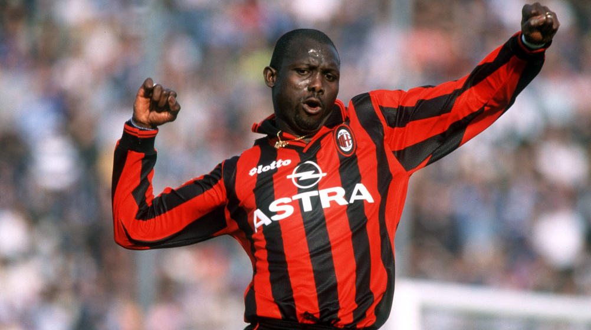
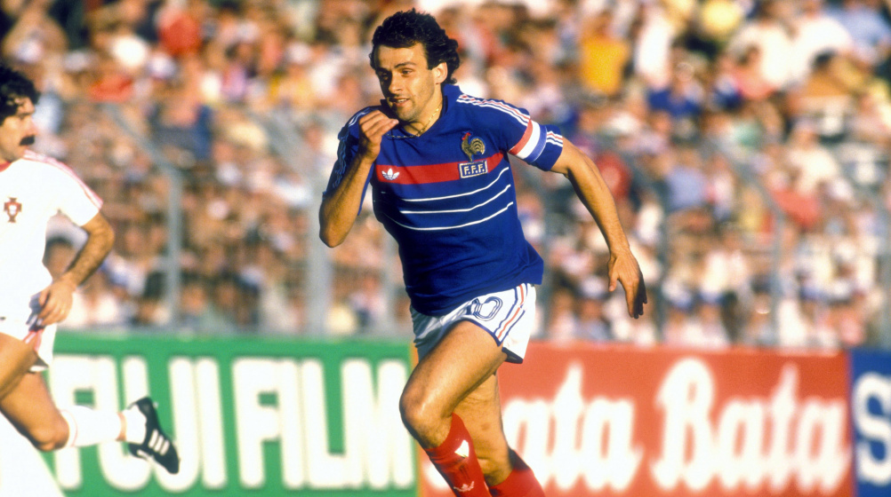
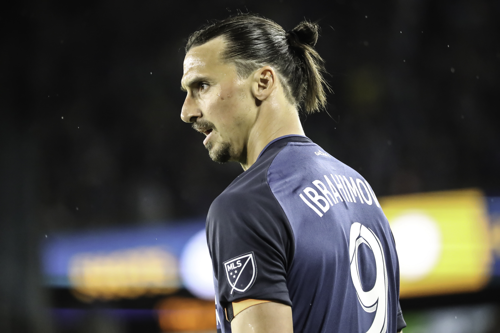
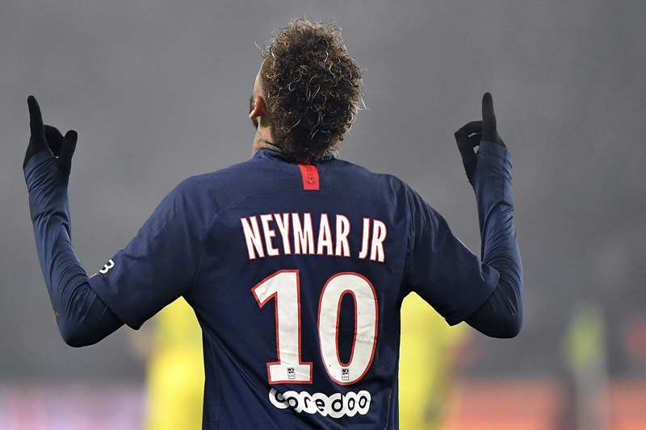
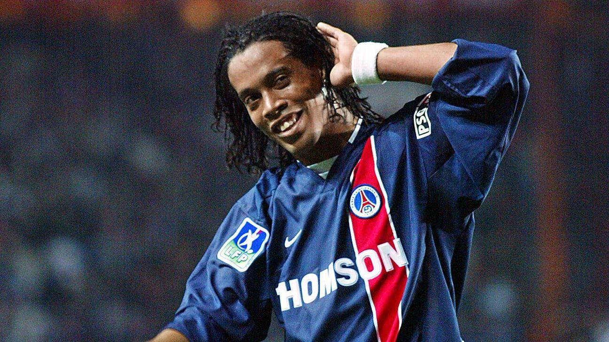
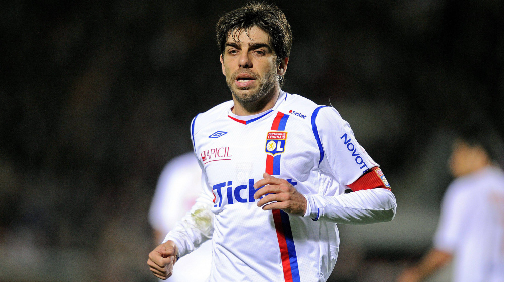
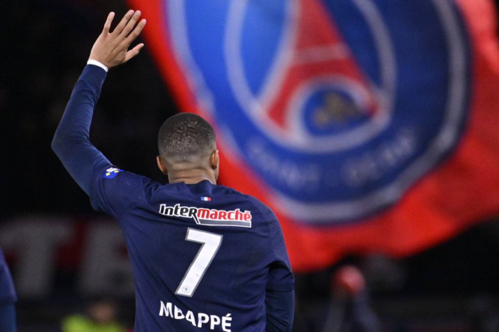

La Ligue 1 es la máxima categoría del fútbol profesional en Francia y una
de las ligas más importantes de Europa. Aquí tienes un resumen de su
historia, actualidad y algunos de sus mejores equipos.
Historia
La Ligue 1, anteriormente conocida como Division 1, tiene sus raíces en la
formación de la Federación Francesa de Fútbol (FFF) en 1919. Sin embargo,
la liga no se estableció formalmente hasta 1932. La creación de la
Division 1 se inspiró en parte en el éxito del campeonato nacional de
fútbol en otros países europeos, como Inglaterra y Alemania. Desde sus
primeras temporadas, la Ligue 1 ha sido el epicentro del fútbol francés,
atrayendo a los mejores jugadores nacionales e internacionales y
proporcionando una plataforma para el desarrollo y la exhibición del
talento futbolístico. A lo largo de los años, la liga ha experimentado
varias reformas y cambios en su formato, pero su compromiso con la
excelencia deportiva y la promoción del juego sigue siendo
constante.Durante la primera mitad del siglo XX, clubes como el Olympique
de Marsella, el AS Saint-Étienne y el Stade de Reims dominaron la liga,
ganando múltiples títulos y estableciendo una rica tradición de éxito en
el fútbol francés. Sin embargo, fue en la década de 1990 cuando el Paris
Saint-Germain (PSG) emergió como un poderoso competidor, transformándose
en el club más dominante de la liga en las últimas décadas. El PSG, con su
respaldo financiero, ha logrado un dominio casi absoluto en la Ligue 1 en
los últimos años, ganando numerosos títulos de liga y estableciéndose como
uno de los clubes más ricos y exitosos de Europa. Sin embargo, otros
clubes como el Olympique Lyonnais, AS Monaco y Olympique de Marsella han
desafiado el dominio del PSG en ocasiones y han contribuido a mantener la
competencia en la liga. A nivel internacional, los equipos de la Ligue 1
han tenido un éxito variable en competiciones europeas como la Liga de
Campeones de la UEFA y la Europa League, con destacadas actuaciones que
incluyen semifinales y finales alcanzadas por varios clubes a lo largo de
los años.
Formato y Equipos
La Ligue 1 está compuesta por 20 equipos que compiten entre sí en un
sistema de todos contra todos, donde cada equipo juega 38 partidos durante
una temporada (19 partidos en casa y 19 fuera de casa). Al final de la
temporada, los dos equipos con menos puntos son relegados a la Ligue 2,
mientras que los dos primeros equipos de la Ligue 2 y el ganador de un
playoff entre el tercero al sexto ascienden a la Ligue 1.
Actualidad
La Ligue 1 sigue siendo una de las ligas más emocionantes y competitivas
de Europa, aunque a menudo se encuentra a la sombra de otras ligas
importantes como la Premier League, La Liga y la Bundesliga. Sin embargo,
ha producido talentos destacados y ha sido escenario de algunos de los
momentos más memorables en la historia del fútbol francés.
Mejores equipos de la Ligue 1
PSG: El Paris Saint-Germain Football Club, comúnmente
conocido como PSG, es uno de los clubes más prominentes del fútbol
francés y europeo. Fundado en 1970, el PSG ha experimentado un ascenso
meteórico en las últimas décadas, convirtiéndose en uno de los clubes
más exitosos de Francia. El PSG disputa sus partidos como local en el
Parc des Princes, ubicado en París. El club ha dominado la Ligue 1
francesa en los últimos años, ganando numerosos títulos de liga y
copas nacionales. Además, ha tenido éxito en competiciones europeas,
llegando a la final de la Liga de Campeones de la UEFA en la temporada
2019-2020. A nivel nacional, el PSG ha establecido una dominación casi
total en el fútbol francés, con una serie de títulos de liga
consecutivos en su haber..
As Monaco: El AS Monaco es uno de los clubes más
importantes del fútbol francés. Fundado en 1924, el club ha tenido una
historia rica y variada en el fútbol francés y europeo. El AS Monaco
disputa sus partidos como local en el Stade Louis II, ubicado en el
principado de Mónaco.
Olympique de Marsella: El Olympique de Marsella es
uno de los clubes más emblemáticos del fútbol francés. Fundado en
1899, el club tiene una larga y rica historia en el fútbol francés y
europeo. El OM disputa sus partidos como local en el Stade Vélodrome,
ubicado en Marsella.
Stade Rennais: El Stade Rennais Football Club es un
club de fútbol con sede en Rennes, Francia. Fundado en 1901, el club
ha competido en varias divisiones del fútbol francés a lo largo de su
historia y ha experimentado momentos de éxito en competiciones
nacionales..
Niza: El OGC Nice es un club de fútbol con sede en la
ciudad de Niza, en la costa sureste de Francia. Fundado en 1904, el
club ha tenido una larga historia en el fútbol francés y ha competido
en varias divisiones a lo largo de los años. El OGC Nice ha tenido
momentos de éxito en el fútbol francés, especialmente en las décadas
de 1950 y 1960, cuando ganaron varios títulos de liga.
Mejores jugadores históricos de la Ligue 1:
George Weah: El primer africano en ganar el Balón de
Oro. Dejó su marca en la Ligue 1 con el AS Monaco y el Paris
Saint-Germain.

Michel Platini: Una verdadera leyenda del fútbol
francés. Se destacó en la Ligue 1 con el AS Nancy y el AS Saint-Étienne
antes de triunfar a nivel internacional con Francia y en la Juventus
ganando así 3 balones de oro seguidos.

Zlatan Ibrahimović: Conocido por su habilidad para
marcar goles y su personalidad única. Dejó una huella imborrable en la
Ligue 1 durante su paso por el Paris Saint-Germain, estableciendo
récords y ayudando al equipo a dominar la liga.

Neymar Jr: Una estrella brasileña que impactó la Ligue
1 tras unirse al Paris Saint-Germain en un traspaso récord mundial en
2017. Su habilidad técnica y capacidad goleadora lo han convertido en
uno de los jugadores más destacados de la liga.

Ronaldinho: Un jugador carismático y talentoso que
brilló en la Ligue 1 con el Paris Saint-Germain antes de alcanzar la
cima de su carrera en el FC Barcelona.

Juninho Pernambucano: Reconocido por su habilidad en
los tiros libres. Se destacó en la Ligue 1 con el Olympique Lyonnais,
ganando múltiples títulos de liga y convirtiéndose en una figura
emblemática del club.

Kylian Mbappe: Uno de los mejores jugadores del mundo
actualmente, tiene unas estadísticas en cuanto a goles y asistencias
fuera de lo normal, y gracias a su habilidad técnica y velocidad y
capacidad para marcar goles, se posiciona como uno de los mejores
históricamente en la liga francesa.

David Ginola:Ginola fue admirado por su estilo de juego
vistoso y su talento para marcar goles espectaculares. Ganó varios
premios individuales, incluyendo el premio al Jugador del Año,
1998-1999.